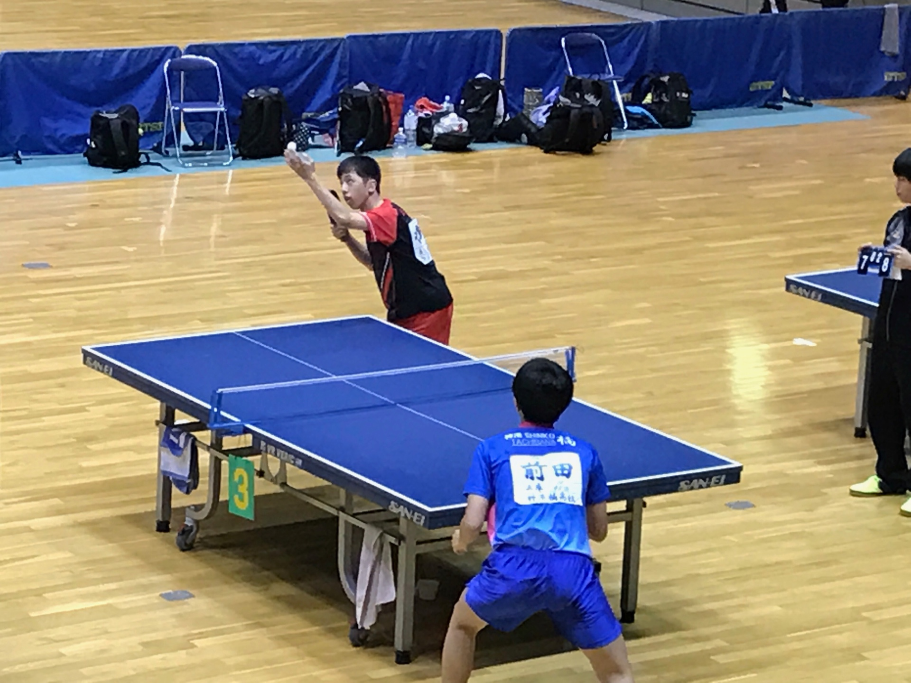
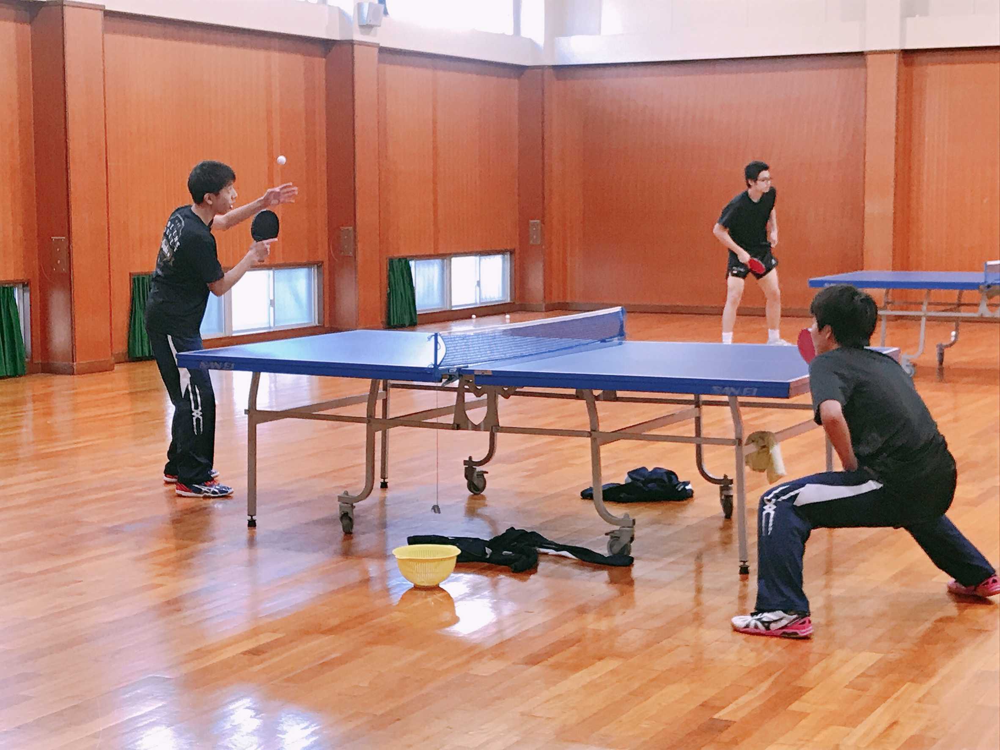
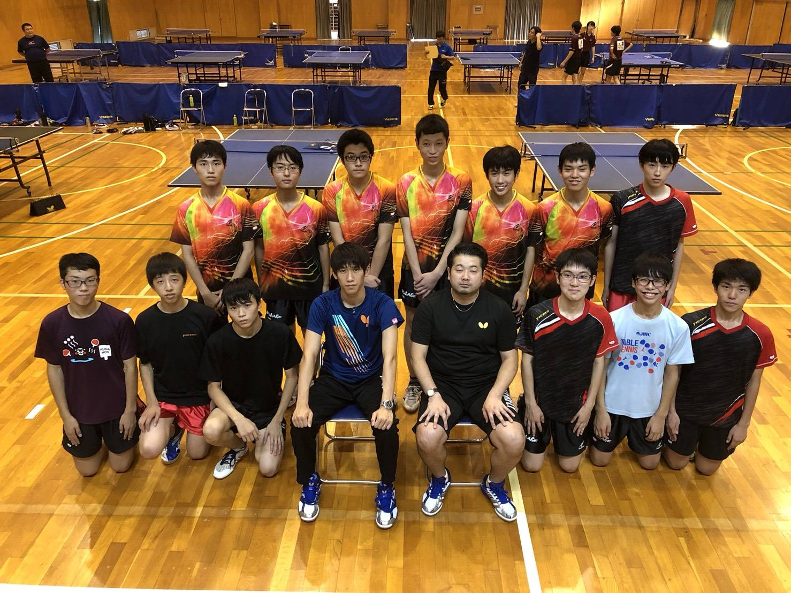
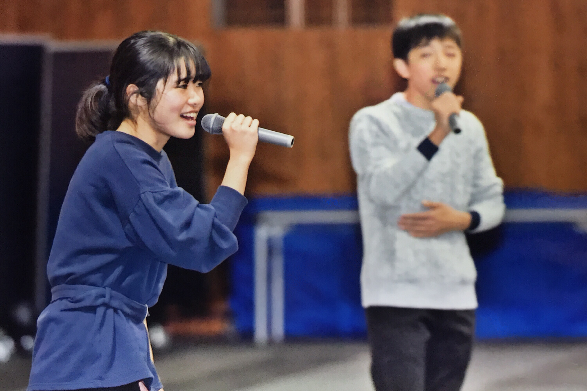

3 Things You Will Learn About Me
- I Love Ping-pong
- I Love Hawai'i
- I Love Music
- Favorite Songs
- "Yours" by Post Malone
- "Supermarket Flowers" by Ed Sheeran
- "10 And 2" by CAIN
- "Fix You" Covered by Jacob Collier
1. I Love Ping-pong
I have been playing ping-pong, or I always call it table tennis, since when was 11 years old, when I was an elementary school student. It started when one of my friends invited me to play it at a local children's center, which he had been a lot of times. He and his friends were members of a local table tennis club team, so they were already so good. I had never played it competetively, so I was the worst player in the room. However, I had so much fun there, and kept going. When I started going to middle school, I decided to join table tennis club (for your information, in Japanese middle school and high school, you are encouraged to join a club in the school). I got better and better each month, and I kept playing in high school. When I was in high school, our team ended up being one of the best 16 teams in Kinki region, which is a little bit smaller than the Nationals.
Not to brag, but on my mission, there were so many missionaries from the States who told me that they were so good at ping-pong, but I had never lost against them. (I know that people in the US usually don't play it competetively because it is not that of a big sport here. It's always Asians or Europeans.)
  2. I Love Hawai'i
Before coming to BYU, and before my mission, I was a student of BYU-Hawaii. I had been wanting to go there because my cousins are half Japanese and half Tongan-Hawaiian, and they lived there. Every time they sent my family pictures or every time they visited Japan and brought some souvenirs, my desire to go there got bigger and bigger. In my senior year of high school, I didn't have a dream school to aim for, therefore, I had no desire to study for college entrance exams, which I failed eventually. I got accepted by some colleges in Japan, but I didn't want to go there, because I had no idea what I wanted to study. One day, my mom asked me if I was interested in going to BYU-Hawaii, and I started preparing to apply, and later I got accepted. When I finally got there, I just fell in love with the culture, the nature, and people. I also got to get one of my dream job, a tour guide at the Polynesian Cultural Center, and I learned a lot of about each culture, and how their culture affected the people from each culture. When I was working there, I felt like I was a part of a big family. The experiences and feelings that I had there have changed me. Even though I was in Hawai'i for 8 months, and working at the PCC only for 2 months, Hawai'i and the Polynesian Cultures have got my heart.


3. I Love Music
I am not sure how many people know this, but karaoke is from Japan. Back in Kobe, Japan, I lived in an apartment complex that has a recreational building right next to it. The building has some ping-pong tables and a karaoke room with a Japanese karaoke machine, and only the residents can use with reservations. The cost was ¥500 ($3) per hour per room, so if you get more people to go there with, the amount of money you pay is even cheaper. My family used to go there as a Family Home Evening activity a lot, and going to karaoke is a huge thing among Japanese high schoolers, so I spent so much time in the room with my family and my friends. One unspoken rule of karaoke in Japan is that you need to sing sing that everyone knows, so I listened to a lot of music from famous Japanese bands so that I could sing them when we did karaoke. Now, I don't need to worry about that, and I am more matured than I was back then, which let me listen to more diverse music. I will attach some of my favorite songs.
I also play the piano, but I think it doesn't make any difference here in Utah because everyone plays it.

"Yours" by Post Malone
"Supermarket Flowers" by Ed Sheeran
"10 And 2" by CAIN
"Fix You" Covered by Jacob Collier (Originally by Coldplay)